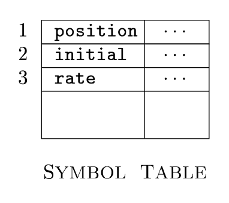
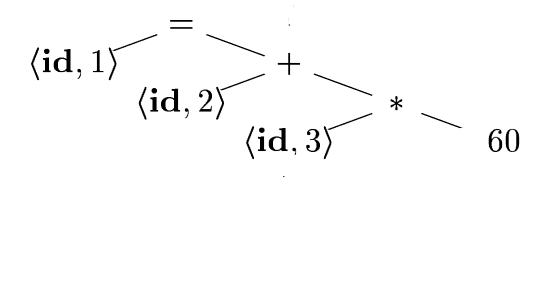
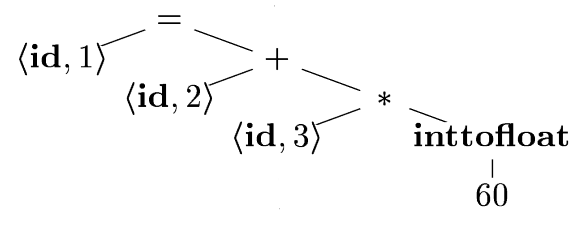
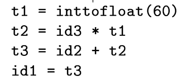
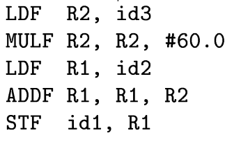

Created Tuesday 14 January 2020
Introduction
What is compilation?
- Translation from one language to another
Translator: A program that takes as input a program written in one programming language (the source language) and produces an "equivalent" program written in another language (the target language)
Compiler: A translator in which the source language is a high-level language (such as Java or C) and the target language is a low-level language (such as Assembly or machine code)
Why compilers?
- We love programming in high level languages
- Computers can only understand it's own machine language
Each language needs it's own compiler
Each target environment needs a special compiler, so you need different versions of gcc for each machine language.
Structure of a Compiler
Does two things:
- analysis
- synthesis
Analysis
Front end
Breaks up the source program into constituent pieces and imposes a grammatical structure onto them
- Creates an intermediate representation of the source program
- Provides error / warning messages if the program does not fit this grammar (eg syntatically ill formed or semantically unsound)
- Collects metadata and stores it in a symbol table
Synthesis
Back end
- Constructs the target program from the intermediate representation and the information in the symbol table
Phases
General phases. May be grouped together, and intermediate representations between grouped phases are not necessarily constructed explicitly
Bold denotes phase, normal denotes intermediate repreentation
(start) Character Stream → Lexical Analyzer
= Token stream → Syntax Analyzer
= Syntax tree → Intermediate Code Generator
= Intermediate representation → Machine-Independent Code Optimizer
= intermediate representation → Code Generator
= target-machine code → Machine-Dependent Code Optimizer
= target machine code
The Symbol Table is used in all phases
The Error Handler is also used in all phases to report info about a bad (ie non-legal) source program
The machine-independent code optimizer between the front and back end performs transformations on the intermediate representation so that the back end can generate a better target program. Optional, may have additional phases involved (and at the end).
Lexical Analysis
aka scanning
- Reads the stream of characters making up the source program
- Groups characters into meaningful sequences called lexemes
- For each lexeme, analyzer produces an output as a token of the form
- <token-name, attribute-value>
- Passes this to next phase
- Token-name
- abstract symbol that is used during syntax analysis
- Attribute-value
- points to an entry in the symbol table for this token
Example:
position = initial + rate * 60
- position is a lexeme, maps to <id, 1>
- id is an abstract symbol (identifier)
- 1 points to the symbol-table entry for position (contains info, eg name, type)
- = is a lexeme mapped to the token <=>
- needs no attribute-value, so it's ommitted
- could use any abstract symbol for assignment
- initial is a lexeme, maps to <id, 2>
- + maps to <+>
- rate maps to <id, 3>
- * maps to <*>
- 60 maps to <60>
- numbers are a bit more complicated, technically would map to something like <number, 4>, where 4 points to the internal representation for 60
Blanks are then discarded, so we now have
<id, 1><=><id, 2><+><id, 3><*><60>
Example tokens
- reserved keywords (begin, goto, while, if, ...)
- user-defined identifiers (x, y, myClass, ...)
- constants (25, 2E+5)
- special symbols ( , . ( ) ; ...)
- basically just a reserved keyword, but important to emphasize that the symbol alone is a token that has a meaning associated with it
Example 2
x := sqrt(y );
while i<=j do
whilei = 1022
1x;
stop
Lexical Output:
x id
:= key
sqrt key
( special symbol
y id
) special symbol
; special symbol
while key
i id
<= key
j id
do key
whilei id
= ss
1022 constant
1x lexical error (communicate to error handler, with error type - variable cannot start with number)
; ss
stop id
Symbol Table:
x id
y id
i id
j id
whilei id
1022 const due to type conversions that may need to happen, this is stored in the symbol table
stop id
Syntax Analysis
aka parsing
- Uses the first components of the tokens from the lexical analyzer to create a tree-like intermediate representation
- structure of the program
- Builds a syntax tree
- interior node = operation
- children = arguments of the operation
- Tree shows the order in which the operations are to be performed
Example:
position = initial + rate * 60

Note that the order of operations is consistent with PEMDAS, eg do multiplication then addition then assignment
Can use Context-Free Grammars (Ch 4) to specify the grammar of the programming language
Semantic Analysis
Uses syntax tree and symbol table to:
- check for semantic consistency with language definition
- gathers type information and saves it (in either)
- performs type checking (matching operands)
- may need to coerce types (eg int to float)
Example

Intermediate Code Generation
- Compiler can construct many different intermediate representations
- Syntax trees are a form of intermediate representation
- After syntax analysis, many compilers generate an explicit low-level / machine-like representation
- program for an abstract machine
- (should be) easy to produce
- (should be) easy to translate to target
- One option: three-address code
- sequence of assembly-like instructions
- three operands per instruction
- operands act like registers
- at most one operator on the right side
- fix the order of operations this way (eg multiplication first)
- compiler must generate temp name to hold the value computed
- some instructions have fewer than 3 operands

Code Optimization
Machine-independent phase
Better can mean:
- faster
- shorter / smaller
- lower power consumption
Example:
- move inttofloat conversion to compile time (replace with 60.0)
- t3 is useless
Compilers differ a lot at this phase and can do a lot of stuff (or not)
Code Generation
Maps the intermediate representation to a target language.
- Registers / memory locations are selected for each of the variables used by the program
- Then, translated into machine instructions
Example:

F = floating point numbers
R1, R2 = registers
loads contents of id3 into R2, multiplies it by floating point constant 60.0 (# = immediate constant)
moves id2 into R1
Adds R1, R2
R1 is set to the address of id1
Importantly, we've ignored allocation for the identifiers in the source program, which can be different for different languages. Storage-allocation decisions are made either during intermediate code generation or during it.
Symbol-Table Management
Data structure containing informtion about every variable in the source program
eg: name, type, scope, number / type of arguments, method of passing arguments, type returned (latter for functions)
- Does the boookkeeping job, eg records all user-defined identifiers and their attributes
- eg: type, scope
Error Handler
Prints error messages and corrects them when possible
Grouping Phases into Passes
Logical organization of a compiler
eg: group
- lexical analysis, syntax analysis, semantic analysis, and intermediate code generation might be grouped together into one pass
- Optimization might be an optional pass
- back-end pass of code generation
Can combine different front ends with the same back ends (many languages on one machine) or many back ends with one front end (one language on many machines)
Compiler-Construction Tools
They exist
- Parser generators
- Automatically produce syntax analyzers from a grammar description of a language
- Scanner generators
- Produce lexical analyzers from a regular-expression description of the tokens of a language
- Syntax-directed translation engines
- Produce collections of routines for walking a parse tree and generating intermediate code
- Code-generator generators
- Produce code generator from rules for translating each operation of the intermediate language into the machine language for a target machine
- Data-flow analysis engines
- facilitate the gathering of information about how values are transmitted from one part to another
- code optimization
- Compiler-construction toolkits
- provide integrated set of routines for constructing various phases of a compiler
Fundamental Concepts
1) Analysis vs Synthesis
- lexical / syntax / semantic analysis
- optimization and code generation
- single-pass = time-effecient
- multi-pass = space-effecient
- multi-pass avoids keeping large intermediate objects (eg syntax tree) in memory (== good)
- front end = source language-aware (depends on source language BUT NOT target machine)
- back end = target language-aware (depends on target machine)
- !! can mix and match! eg many back-ends for one front-end C compiler, or many front-ends for one back-end x86 compiler


{kind=link}
{kind=link}
{kind=link}
{kind=link}
{kind=link}
{kind=link}
{kind=link}
{kind=link}
{kind=link}
{kind=link}